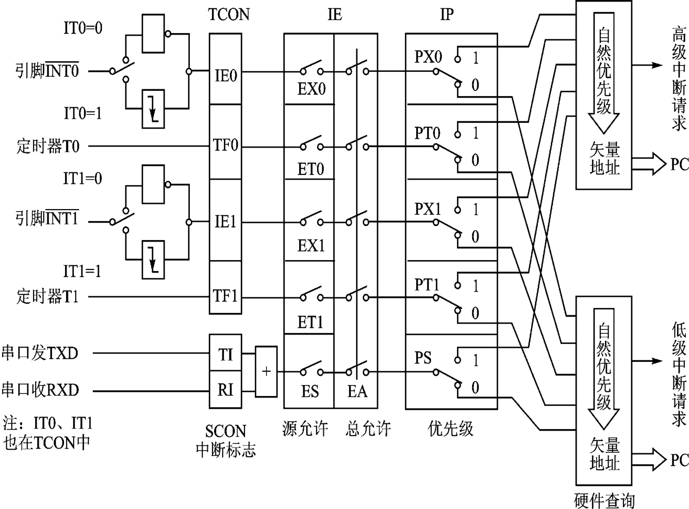

单片机
单片机定义
[!note]
单片机：将计算机的基本部件集成在一块芯片上
单片机是电子计算机的一种
将组成微型计算的各个功能部件：中央处理器（CPU）、存储器（RAM、ROM、EPROM）、定时/计数器、串行口、I/O接口电路等集成在一块集成电路芯片中从而构成完整的微型计算机，故称为单晶片微型计算机，简称单片机，也称为微控制器
单片机真正能让开发者做到一位一位（bit）的编程。
单片机控制应用
- 单片机通过接口对外部设备进行控制

- 单片机是物联网控制系统中的“节点机”
[!note]
单片机和嵌入式系统：
- 单片机和嵌入式系统都属于计算机，硬件和软件都可以相对裁剪的计算机系统
- 但是单片机一般用于小任务，功能相对单一，开发简单
- 嵌入式系统可裁剪，做大任务，“嵌入”到其他设备中，用于实现特定功能
单片机分类
按用途
通用型：将可开发的资源（ROM、RAM、I/O、EPROM）等全部提供给用户。
专用型：其硬件及指令是按照某种特定用途而设计，例如电机控制器。
按基本操作处理的数据位数：1位、4位、8位、16位、32位
[!note]
为什么以8位的MCU为主? 需要稳定性，功耗低，成本低（一块钱成本）
MCU的体系结构-以MCS-51单片机为例
MCS-51单片机硬件结构及引脚
MCS-51单片机的内部结构
- 组成：CPU(运算和控制)，RAM（数据存储器），ROM（程序存储器），I/O(串口并口)，内部总线，中断系统

- 振荡器提供周期信息
中央处理器（CPU）
由运算器和控制器组成
- 运算器：8位算术逻辑运算单元ALU（Arithmetic Logic Unit）、8位累加器A（Accumulator）、8位寄存器B、程序状态字寄存器PSW（Program Status Word）、8位暂存寄存器TMP1和TMP2等，完成算术运算和逻辑运算
- 控制器：程序计数器PC（Program Counter）、指令寄存器IR（Instruction Register）、指令译码器ID（Instruction Decoder）、堆栈指针SP、数据指针DPTR、定时控制逻辑和振荡器OSC等电路，根据PC取码存放在IR后，由ID译码，产生执行信号
存储器
把程序存储器和数据存储器分开，有各自的寻址系统、控制信号和功能
8051的存储器在结构上分为片内数据存储器、片内程序存储器、片外数据存储器和片外程序存储器4个存储空间。但从用户使用的角度看，片内程序存储区和片外程序存储区是统一编址的，所以在逻辑上8051的存储器分为3个逻辑空间

三个逻辑空间：
片内外统一寻址的64KB程序存储器空间，地址范围为0000H～FFFFH。
64KB的片外数据存储器空间，地址范围也为0000H～FFFFH。
256B的片内数据存储器空间，地址范围为00H～FFH。
程序存储器
- 一般将只读存储器（ROM）用做程序存储器。可寻址空间为64KB，用于存放用户程序、数据和表格等信息
MCS-51单片机按程序存储器可分为内部无ROM型（如8031）和内部有ROM型（如8051）两种，连接时EA引脚有区别。
具有特殊含义的存储单元
0000H：单片机复位后的程序入口地址。
中断向量：3+8*n(0<=n<=4)
0003H：外部中断0的中断服务程序入口地址。
000BH：定时器0的中断服务程序入口地址。
0013H：外部中断1的中断服务程序入口地址。
001BH：定时器1的中断服务程序入口地址。
0023H：串行口的中断服务程序入口地址
数据存储器
一般将随机存储器（RAM）用做数据存储器。可寻址空间为64KB
片外RAM：
最大范围：0000H～FFFFH，64KB；用指令MOVX访问
片内RAM：
最大范围：00H～FFH，256B；用指令MOV访问。

特殊功能寄存器（SFR）
- MCS-51有21个特殊功能寄存器（也称为专用寄存器），包括算术运算寄存器、指针寄存器、I/O口锁存器、定时器/计数器、串行口、中断、状态、控制寄存器等
SFR反映了MCS-51单片机的运行状态。
程序计数器PC
- 程序计数器PC在物理上是独立的，它不属于SFR存储器块
- PC是一个16位的计数器，专门用于存放CPU将要执行的指令地址（即下一条指令的地址）
- 可以通过转移、调用、返回等指令改变其内容，以控制程序执行的顺序
累加器A
累加器A是8位寄存器，又记做ACC
在算术/逻辑运算中用于存放操作数或结果
寄存器B
专门为乘除法指令设计的，也作通用寄存器用
工作寄存器
内部RAM的工作寄存器区00H～1FH共32个字节被均匀地分成四个组（区），每个组（区）有8个寄存器
分别用R0～R7表示，称为工作寄存器或通用寄存器，其中，R0、R1还经常用于间接寻址的地址指针
通过程序状态字寄存器（PSW）第3、4位设置工作寄存器区。
程序状态字PSW
用于存放程序运行的状态信息，PSW中各位状态通常是在指令执行的过程中自动形成的，但也可以由用户根据需要采用传送指令加以改变
例如：Cy(进借位)，AC(辅助进借位)，F0(用户)，RS1.RS0(工作寄存器组（区）选择)，OV(溢出标志)，P(奇偶标志位)
数据指针DPTR
DPTR主要用作16位间址寄存器，访问程序存储器和片外数据寄存器
也可作为两个独立的8位寄存器DPH（高8位）、DPL （低8位）使用
堆栈指针SP
堆栈指针SP是一个8位寄存器，用于指示堆栈的栈顶，它决定了堆栈在内部RAM中的物理位置
设立堆栈的目的是用于数据的暂存，中断、子程序调用时断点和现场的保护与恢复
I/O口专用寄存器（P0, P1, P2, P3）
8051片内有4个8位并行I/O接口P0, P1, P2和P3
定时器/计数器（TL0, TH0, TL1和TH1）
2个16位定时器/计数器是完全独立的。可以单独对这4个寄存器进行寻址，但不能把T0和T1当做16位寄存器来使用。
串行数据缓冲器（SBUF）
存放需要发送和接收的数据
发送缓冲器和接收缓冲器组成
发送和接收的操作其实都是对串行数据缓冲器SBUF进行的
其他控制寄存器
还有IP, IE, TCON, SCON和PCON等几个寄存器，主要用于中断、定时和串行口的控制
I/O接口
I/O接口是MCS-51单片机对外部实现控制和信息交换的通道，用于信息传送过程中的速度匹配和增加它的负载能力。
8051内部有4个8位并行接口P0, P1, P2, P3，有1个全双工的可编程串行I/O接口。
定时器与计数器
8051内部有两个16位可编程序的定时器/计数器，均为二进制加1计数器，
T0和T1均有定时器和计数器两种工作模式
- 定时器模式下，T0和T1的计数脉冲可以由单片机时钟脉冲经12分频后提供
- 计数器模式下，T0和T1的计数脉冲可以从P3.4和P3.5引脚上输入
- 控制由定时器方式选择寄存器TMOD和定时器控制寄存器TCON完成
中断系统
- 中断：指CPU暂停原程序执行，转而为外部设备服务（执行中断服务程序），并在服务完后返回到原程序执行的过程。
- 中断系统：指能够处理上述中断过程所需要的硬件电路
- 中断源：指能产生中断请求信号的源泉。
8051的中断系统主要由中断允许控制器IE和中断优先级控制器IP等电路组成
MCS-51单片机外部引脚
- 8051单片机有40个引脚，分为端口线、电源线和控制线三类。
电源线
GND（ground）：接地引脚。
VCC：正电源引脚。接＋5V电源
端口线
P0～P3口：4×8=32条。

P0(P0.0~P0.7)
8位双向三态I/O口，为外部扩展时的数据总线/低8位地址总线的分时复用口。
又可作为通用I/O口，每个引脚可驱动8个TTL负载。
对EPROM型芯片（如8751）进行编程和校验时，P0口用于输入/输出数据
P1
8位准双向I/O口，内部具有上拉电阻，可作为通用I/O口。每个引脚可驱动4个TTL负载
P2
同P1，但是可以作为外部扩展时的高8位地址总线
P3
8位准双向I/O口，内部具有上拉电阻。它是双功能复用口
作为通用I/O口时，功能与P1口相同，
常用第二功能。每个引脚可驱动4个TTL负载。作为第二功能使用时，各位的作用如下页表所示

控制线
RST/VPD
RST/VPD引脚是复位信号/备用电源线引脚
当8051通电时，在RST引脚上出现24个时钟周期以上的高电平，系统即初始复位。
ALE/PROG_
地址锁存允许/编程引脚。
访问外部程序存储器时，ALE的输出用于锁存地址的低位字节，以便P0口实现地址/数据复用
不访问外部程序存储器时，ALE端将输出一个1/6时钟频率的正脉冲信号
第二功能：对EPROM型芯片（如8751）进行编程和校验时，此引脚传送52ms宽的负脉冲选通信号
EA_/V_pp
允许访问片外程序存储器/编程电源引脚(低电平有效)
第二功能是片内EPROM编程/校验时的电源线，在编程时，VPP脚需加上21V的编程电压
XTAL1和XTAL2
XTAL1脚为片内振荡电路的输入端，XTAL2脚为片内振荡电路的输出端
片内时钟振荡方式，但需在XTAL1和XTAL2脚外接石英晶体（频率为1.2～12MHz）和振荡电容
外部时钟方式，即将XTAL1接地，外部时钟信号从XTAL2脚输入
MCS-51单片机的工作方式
MCS-51系列单片机的工作方式可分为：复位方式、程序执行方式、单片执行方式、掉电保护方式、节电工作方式和EPROM编程/校验方式
复位
- 系统开始运行和重新启动靠复位电路来实现，这种工作方式为复位方式
- 单片机在开机时都需要复位，以便CPU及其他功能部件都处于一种确定的初始状态，并从这个状态开始工作
- MCS-51单片机在RST引脚产生两个机器周期（即24个时钟周期）以上的高电平即可实现复位
[!tip]
- 复位是单片机的初始化操作
- 复位功能是把PC初始化为0000H，使CPU从0000H单元开始执行程序
- 内部RAM的数据是不变的
- 程序运行出错或操作错误使系统处于死锁状态时，需要按复位键重新启动
复位操作有上电自动复位和按键手动复位两种方式
上电自动复位是通过外部复位电路的电容充电来实现的。
按键手动复位是通过复位端经电阻与电源VCC接通而实现的，它兼备上电复位功能
程序执行
程序执行方式是单片机基本工作方式，可分为连续执行工作方式和单步执行工作方式
- 连续执行：单片机复位后立即转到0000H处执行程序。自动连续地执行下去
- 单步执行：用户调试程序的一种工作方式，按一次，单片机就执行一条指令（仅仅执行一条）,利用单片机外部中断功能实现
节电方式
节电工作方式是低功耗的工作方式，可分为空闲（等待）方式和掉电（停机）方式。
- HMOS单片机的掉电保护：当VCC突然掉电时，单片机通过中断将必须保护的数据送入内部RAM，备用电源VPD可以维持内部RAM中的数据不丢失
- CHMOS单片机的节电方式：CHMOS型单片机特别适用于低功耗应用场合，它的空闲方式和掉电方式都是由电源控制寄存器PCON中相应的位来控制
[!note]
电源控制寄存器PCON
空闲工作方式
将IDL位置为1（用指令MOV PCON, #01H）

CPU为空闲待机状态，中断系统、串行口、定时器/计数器，仍有时钟信号，仍继续工作
中断退出，硬件复位退出空闲状态
掉电工作方式
将PD置为1（用指令MOV PCON, #02H），片内的RAM和SFR中的数据保持不变，而包括中断系统在内的全部电路都将处于停止工作状态
硬件复位退出掉电工作方式
编程和校验
- 编程是将原始程序、数据写入内部EPROM中
- 校验是在向片内程序存储器EPROM写入信息时或写入信息后，可将片内EPROM的内容读出进行校验
时序
[!note]
- CPU在执行指令时所需控制信号的时间顺序称为时序。
- 时序是用定时单位来描述的，MCS-51的时序单位有四个，分别是时钟周期（节拍）、状态、机器周期和指令周期
时序单位：
时钟周期：振荡周期、节拍（用P表示)
为单片机提供时钟信号的振荡源（OSC）的周期。它是时序中的最小单位。
状态（S）：
- 振荡脉冲经过二分频后即得到整个单片机工作系统的状态
- 一个状态有两个节拍，前半周期对应的节拍定义为P1，后半周期对应的节拍定义为P2
机器周期：通常将完成一个基本操作所需的时间称为机器周期
指令周期：执行一条指令所需要的时间称为指令周期。它是时序中的最大单位。
[!tip]
单片机时序定时单位从小到大依次为：时钟周期、状态周期、机器周期和指令周期
MCS-51指令的取指/执行时序
- 指令的集合称为程序，执行程序的过程就是执行指令的过程
- 单片机执行任何一条指令时都可以分为取指阶段和执行阶段。
- 在取指阶段，CPU从程序存储器中取出指令操作码，送指令寄存器，
- 经指令译码器译码，产生一系列控制信号，完成本指令规定的操作
- 在取指阶段，CPU从程序存储器中取出指令操作码，送指令寄存器，再经指令译码器译码，产生一系列控制信号，完成本指令规定的操作
- ALE信号是用于锁存低8位地址的选通信号，每出现一次该信号，单片机即进行一次读指令操作。
- 当指令为多字节或多周期指令时，只有第一个ALE信号进行读指令操作，其余的ALE信号为无效操作（或读操作数操作）

访问片外ROM/RAM指令的时序
外部程序存储器读时序
从外部程序存储器读取指令，必须有两个信号进行控制：ALE信号和_PSEN信号（外部ROM读选通脉冲）

- MCS-51单片机有外部总线，16位的地址线，8位的数据线，但是地址的低8位跟数据线是重合的，因此访问的时候需要ALE信号区分开低8位（P0口，高8位是P2口）地址和数据
外部数据存储器读时序

P2 是高八位地址总线，而P0是分时复用地址、数据总线（控制低八位），需要ALE来锁存P0在担任地址角色时输出的地址信号。
中断系统
CPU与外部设备的通信方式
- 无条件传送方式：CPU总是认为外设在任何时刻都处于“准备好”的状态
- 查询传送方式：输入时，需要查询外设的输入数据是否准备好。输出时，需要查询外设是否把上一次输出的数据处理完毕
- 中断传送方式：CPU暂时中止当前的工作，转去处理所发生的事件。中断服务处理完该事件后，再返回到原来被中止的地方继续原来的工作，这样的过程称为中断**
中断传送方式
- CPU暂时中止当前的工作，转去处理所发生的事件。中断服务处理完该事件后，再返回到原来被中止的地方继续原来的工作，这样的过程称为中断
中断源与控制寄存器
¨标准MCS51有如下5个中断源：外2(INT0、INT1）、内2（T0、T1）、串1，外2可扩展
串行口 完成一帧发送(TI)或接收(RI)中断请求
串口只要发送或接收完一帧，都会置位串口中断标志位（发送就置位TI，接收则置位RI），两个标志位只要有一个为1（即是两种情况有一种发生）且此时系统允许串口中断，则会转向中断服务程序，
在中断服务程序里判断中断是TI/RI哪个为1触发的，相应的做出处理，如可以把缓冲区的数据读出来等。
如果没有开中断，则通过检测TI/RI是否为1来检测发送或者接收结束否，这两个标志位无论是中断法还是查询法都只能使用软件清零（接收完了人工置0）。

- 外部中断0 > 定时/计数器0 > 外部中断1 > 定时/计数器1 > 串行口
MCS51的片上接口及应用
定时器/计数器及应用
比较方便的办法是利用单片机内部的定时/计数器。也可以采用下面三种方法：
- 软件定时
- 采用时基电路定时：555电路，外接必要的元器件（电阻和电容）
- 采用可编程芯片定时：
定时器/计数器概述
- 可编程定时器/计时器
- 确定其工作方式是定时还是计数；
- 预置定时或计数初值；
- 当定时时间到或计数终止时，要不要发中断请求；
- 何时启动定时器或计数器工作
工作原理
- 定时器：计数输入信号来自内部振荡信号，在每个机器周期内定时器的计数器做一次“+1”运算。因此定时器亦可视为计算机机器周期的计数器
- 计数器：计数输入信号来自外部引脚T0（P3.4）、T1（P3.5）上的计数脉冲，外部每输入一个脉冲，计数器做一次“+1”运算
都可以设置初值以及溢出时都可以产生中断
当加到计数器为全1时，再输入一个脉冲就使计数器回零，且计数器的溢出使TCON中TF0或TF1置1
由溢出时计数器的值减去计数初值才是加1计数器的计数值
定时器/计数器的主要特性
- 每1个定时器/计数器都可以分为两个独立的8位定时器/计数器
- 有4种工作方式：其中T0有方式0、1、2、3，T1有方式0、1、2
- 需写入计数初值，且规定其工作方式，每种工作方式的初值计算有不同方法
内部结构
- 定时/计数器的实质是加1计数器（16位），由高8位和低8位两个寄存器组成。
- TMOD是定时/计数器的工作方式寄存器，确定工作方式和功能；
- TCON是控制寄存器，控制T0、T1的启动和停止及设置溢出标志。
定时器/计数器的控制
方式控制寄存器TMOD 用于设置定时/计数器的工作方式

- GATE：门控位。选择内部中断（GATE=0),外部中断（GATE=1)
- C/_T：定时/计数模式选择位
- M1和M0：工作方式选择位
| M1M0 | 工作方式 | 功能 |
|---|---|---|
| 00 | 方式0 | 13位计数器 |
| 01 | 方式1 | 16位计数器 |
| 10 | 方式2 | 可自动重新装载的8位计数器 |
| 11 | 方式3 | T0分为两个独立的8位计数器，T1停止计数 |
定时器/计数器控制寄存器TCON

- TF1（TCON.7）， T1溢出中断请求标志位。
- TR1（TCON.6）：T1运行控制位。
定时器/计数器的工作方式
方式0
方式0为13位计数，由TL0的低5位（高3位未用）和TH0的8位组成。
TL0的低5位溢出时向TH0进位，TH0溢出时，置位TCON中的TF0标志，向CPU发出中断请求。

计数个数与计数初值的关系为： X=2^13 - N
方式1
方式1的计数位数是16位，由TL0作为低8位、TH0作为高8位，组成了16位加1计数器 。

计数个数与计数初值的关系为： X=2^16 - N
方式2
- 方式2为自动重装初值的8位计数方式。
- TL1（或TL0）被定义为计数器，TH1（或TH0）被定义为赋值寄存器

计数个数与计数初值的关系为： X=2^8 - N
适合于用作较精确的脉冲信号发生器
方式3
方式3只适用于定时/计数器T0，定时器T1处于方式3时相当于TR1=0，停止计数

工作方式3将T0分成为两个独立的8位计数器TL0和TH0
模式3通常适用于要求增加一个额外的8位定时器的情况
计数初值的计算
置入计数初值X可计算如下：
计数方式时：
X＝M－计数值（X即为计数值的补码）
例如：要计100个数，则计数初值X=M－100
② 定时方式时：
（M－X）×T＝定时值
故，X＝M－定时值/T
其中T为计数周期，是单片机时钟的12分频，即单片机机器周期。
当晶振为6MHz时，T＝2μs，当晶振为12MHz时，T＝1μs。
总结
定时和计数实质都是对脉冲的计数，只是被计脉冲的来源不同，定时方式的被计脉冲来源于时钟，计数方式的被计脉冲来源于外部
定时方式的计数初值和被计脉冲周期有关，计数方式的和被计脉冲的个数有关。
无论定时还是计数，当计满规定的脉冲个数产生溢出（计数初值寄存器回零），置位TFx , 可以通过程序查询，如果允许中断，会产生中断。
中断应用
中断处理过程
中断响应
- 中断响应的前提
- EA=1(开中断)
- 对应的中断允许标志=1
- 无同级或更高级中断正在处理
如果当前执行RETI或者访问IE或者IP的指令，需要再执行一条指令，才能响应中断
具体过程：
- 置相应的优先级触发器状态为1
- 执行一个硬件生成子程序调用指令
- 保护断点。注意不保存PSW
- 转入相应的中断服务程序入口，执行中断服务程序
中断响应时间
- 第一个周期：采样外部中断请求输入引脚电平
- 第二个周期：查询IE0和IE1
- 第三个周期：维持请求中断信号
从外部中断请求有效到开始执行中断服务程序的第一条指令，中间至少需要3个完整的机器周期。如果中断被阻止，则中断响应时间将延长
中断入口地址：通常在这些入口放置一个无条件转移指令，转移到其他地址执行
中断处理：保护现场，切换寄存器工作区，中断撤销
汇编语言中断编程
- 中断入口地址设定
- 中断允许、优先级设定
- 中断服务程序：保护现场，切换工作寄存器区，执行中断工作，RETI
C语言中断编程
主程序：允许中断、中断优先级
中断函数：
- 使用
interrupt m进行修饰。其中m的取值为0~31对应不同中断方式 - 中断函数不能进行参数传递
- 中断函数没有返回值
- 在任何情况下都不能直接调用中断函数
- 被调用函数所使用的寄存器必须与中断函数相同
- C51编译器从绝对地址
8m+3处产生一个中断向量 - 中断函数最好写在文件的尾部，并不能使用extern存储类型说明。
- 使用
using n修饰符修饰符
using n用于指定本函数内部使用的工作寄存器组，其中n的取值为0~3，表示寄存器组号using n修饰符不能用于有返回值的函数，C51函数的返回值是放在寄存器中的
串行接口及应用
串行通信的基本概念
- 串行通信就是二进制信息位按时间顺序一位一位地传送的通信方式
- 串行通信有两种基本通信方式：异步方式和同步方式
异步串行通信
- 异步通信，是指数据传送以字符为单位，字符与字符间的传送是完全异步的，位与位之间的传送基本上是同步的。
- 异步串行通信的特点为：
- 以字符为单位传送信息。
- 相邻两字符间的间隔是任意长。
- 接收时钟和发送时钟只要相近就可以，不需要精确同步。
简单说就是：字符间异步，字符内部各位同步。
异步串行通信的数据格式：每个字符（每帧信息）由4个部分组成
- 1位起始位，规定为低电平0；
- 5～8位数据位，即要传送的有效信息；
- 1位奇偶校验位；
- 1～2位停止位，规定为高电平1。

同步串行通信
- 同步通信，是指数据传送是以数据块（一组字符）为单位，字符与字符之间、字符内部的位与位之间都同步。
同步串行通信的特点为：
- 以数据块为单位传送信息。
- 在一个数据块（信息帧）内，字符与字符间无间隔。
- 接收时钟与发送进钟严格同步，通常要有同步时钟。
- 字符数据间不允许有间隙，当线路空闲或没有字符可发送时，发送同步字符。
同步串行通信的数据格式：每个数据块（信息帧）由3个部分组成：
- 2个同步字符作为一个数据块(信息帧)的起始标志；
- n个连续传送的数据
- 2个字节循环冗余校验码(CRC)
MCS51串行接口的结构与控制
MCS-51系列单片机有一个全双工的串行接口，可进行异步串行接收和串行发送，可编程选择四种工作方式，波特率可由用户设置
通过引脚RXD（P3.0串行数据接收端）和引脚TXD（P3.1串行数据发送端）与外界进行通信。
可以作为UART（Universal Asynchronous Receiver/Transmitter）用，也可用作同步移位寄存器。

串行控制寄存器SCON
用以存放串行口的控制和状态信息。

波特率发生器:
定时器T1作波特率发生器，改变计数初值就可以改变串行通信的速率，称为可变波特率
以内部时钟的分频器作波特率发生器，因内部时钟频率一定，称为固定波特率
串行通信的传送过程
- 接收，串行数据通过RXD（P3.0）进入单片机。当接收控制器检测到接收端RXD的负跳变时，启动接收过程，则串行口按照程序设定的格式、以一定的频率（波特率）接收一帧数据，接收完毕，数据存入接收缓冲器SBUF中，并置RI为1。
- 发送方，通过CPU执行 MOV SBUF， A指令启动发送过程，数据由TXD（P3.1）一位一位的发出，发送完最后一位，将TI置1。
[!tip]
- 甲、乙方的移位时钟频率应相同，即应具有相同的波特率，否则会造成数据丢失。
- 发送方是先发数据再查标志，接收方是先查标志再收数据。
- CPU通过指令和SBUF并行交换数据，查询标志位来确定数据的移位是否完成
波特率
- 方式0为移位寄存器方式，波特率是固定的：波特率=
Fosc/12； - 方式1和方式3的波特率可变，由定时器T1溢出速率控制。方式1和方式3波特率=（2^SMOD/32）×（T1溢出率）
方式2为9位UART，方式2波特率=（2^SMOD/64）×Fosc。波特率仅与PCON中SMOD的值有关，当SMOD=0时，波特率为Fosc/64；当SMON=1时，波特率为Fosc/32。
使用定时器作为波特率发生器

并行口及其应用
不同的并行口结构
- P0口
- P0口是8位双向三态输入/输出接口
- P0口既可作地址/数据总线使用，又可作通用I/O口用。
- 连接外部存储器时，P0口一方面作为8位数据输入/输出口，另一方面用来输出外部存储器的低8位地址。

- P1口
- P1口是8位准双向口，作通用输入/输出口使用
- 在输出驱动器部分，P1口有别于P0口，它接有内部上拉电阻。
- CPU既可以对P1口进行字节操作，又可以进行位操作。
- P3口
- P2口是8位准双向输入/输出接口
- P2口可作通用I/O口使用，与P1口相同。
- 当外接程序存储器时，P2口给出地址的高8位，此时不能用作通用I/O。

- P3口
P3口也是一个8位的准双向输入/输出接口
[!important]
各个接口对比
接口 电气特性 专用功能 用途 P0 三态输入输出 地址低8位/数据总线 P1 上拉电阻 外部接口 P2 上拉电阻 地址高8位 P3 上拉电阻 专用功能